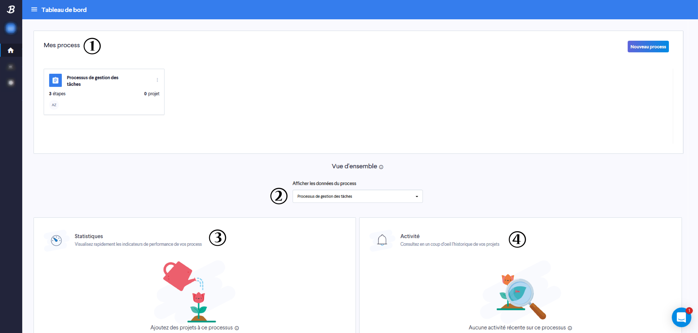
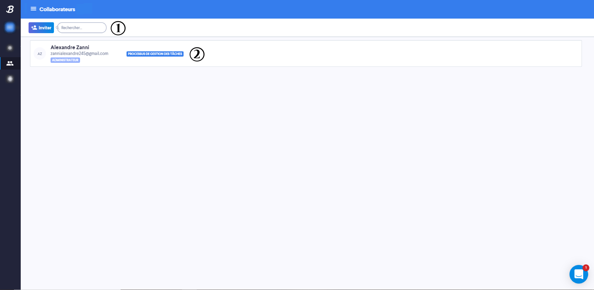
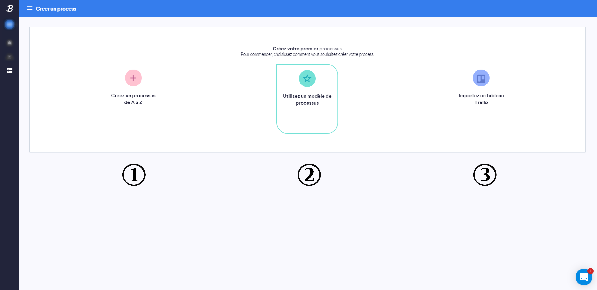
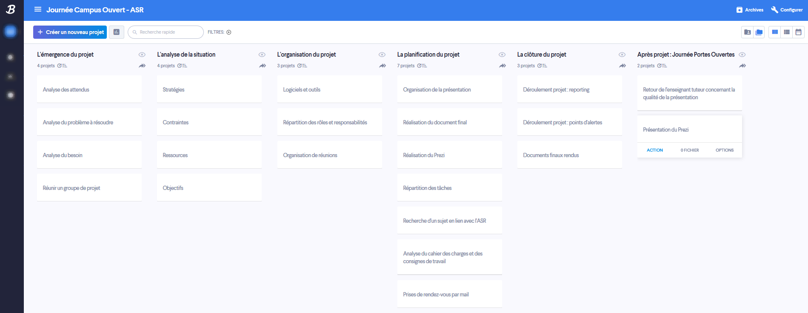

Tutoriels
Tutoriel : Bubblz
Basé sur le projet-vidéo "Fake-News" et le projet tutoré "Journée Campus Ouvert"
La barre de menu

Description des items de la barre de menu
| Numéro | Description |
|---|---|
| 1 | Compte : Permet de gérer tout ce qui concerne le compte utilisateur ainsi que de configurer les paramètres du projet en cours (paramètres de / changer d'organisation, Paiement & Factures, Mes modèles & données). |
| 2 | Tableau de bord : Page d'accueil du site qui regroupe les process de l'utilisateur ainsi que les statistiques et l'historique de ceux-cis. |
| 3 | Collaborateurs : Permet d'ajouter des collaborateurs à un process et de définir leurs rôles (administrateur par exemple). |
| 4 | Mes process (signe "+") : Permet de créer un process de trois façons différentes :
|
| 5 | "Processus de gestion des tâches" : Ce nom est le premier process (exemple) d'un listing vertical de "Mes process". Ouvrir un process autorise la création d'un tableau de bord permettant de suivre toutes les tâches à effectuer ou en cours d'exécution pour l'équipe. Les collaborateurs concernés doivent être ajoutés pour profiter de cette fonctionnalité. |
| 6 | Infobulle d'aide : Permet de poser des questions à l'équipe d'assistance de Bubblz. |
Tableau de bord (page d'accueil)

Description des items du tableau de bord
| Numéro | Description |
|---|---|
| 1 | Mes process : Listing horizontal des process créés. Le bouton "Nouveau process" fait la même action que le signe "+" (Mes process) de la barre de menu. Un process peut-être ouvert par un clic sur sa fenêtre et plusieurs actions peuvent être effectuées en cliquant sur les trois petits points verticaux ("Infos" qui permet de gérer les paramètres généraux tel que le nom du process, "Dupliquer" qui permet de faire une copie du process et "Supprimer" qui supprime le process concerné). |
| 2 | Afficher les données du process : Permet de sélectionner le process dont l'on souhaite connaître les données statistiques ou d'activité (cf. numéro 3 et 4). |
| 3 | Statistiques : Dès lors qu'un projet est ajouté à un process, ses indicateurs de performances (statistiques) seront visibles dans cette fenêtre. |
| 4 | Activité : Dès lors qu'une action est effectuée sur un des projets du process, les actions (activité) sur ceux-cis seront visibles dans cette fenêtre. |
Collaborateurs

Description des items de Collaborateurs
| Numéro | Description |
|---|---|
| 1 | Inviter & Rechercher : Permet d'ajouter des collaborateurs à un process. |
| 2 | Liste des collaborateurs : Permet de définir le rôles des collaborateurs (administrateur par exemple). |
Mes process (signe "+")

Description des items de Mes process (signe "+")
| Numéro | Description |
|---|---|
| 1 | Créer un processus de A à Z : Création via différentes étapes personnalisables. |
| 2 | Utiliser un modèle de processus : Choisir des modèles prédéfinis pour faciliter la création. |
| 3 | Importez un modèle Trello : Permet à l'utilisateur d'un compte Trello d'importer un tableau (avec ses listes et cartes). |
Construction d'un process

Description des items pour la construction d'un process
| Numéro | Description |
|---|---|
| 1 | Modèles : Une fois le tableau créé, celui-ci peut être personnalisé de différentes façons : |
| 2 | Trouver un modèle : Permet de faire une recherche par mots-clés des modèles. |
| 3 | Commentaires : Des commentaires concernant la galerie de modèles peuvent être envoyés à l'équipe de développement de Trello. |
| 4 | Nouveaux modèles et modèles spéciaux : Liste des modèles les plus récemment créés par l'équipe de développement de Trello ainsi que les modèles dits "spéciaux". |